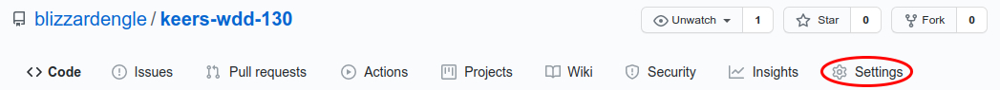
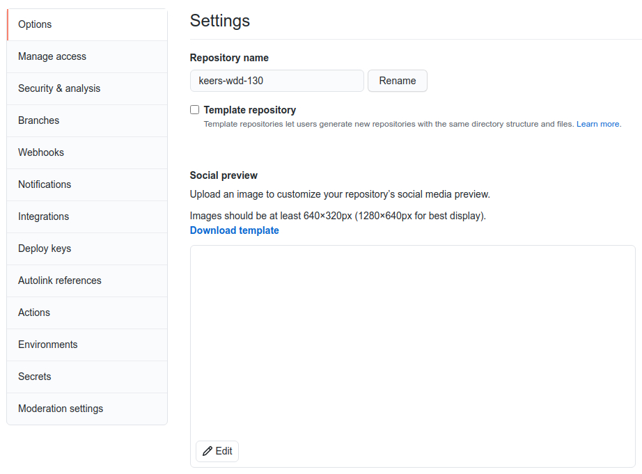
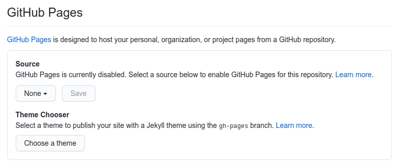
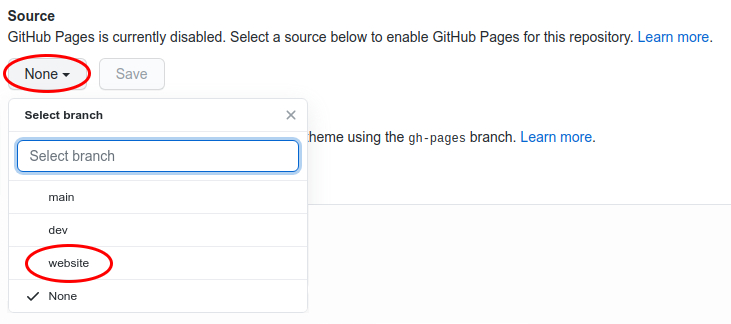
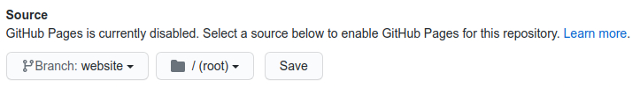
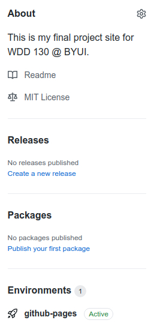

GitHub Pages
GitHub Pages (gh-pages) is a feature built into GitHub that allows you to host a static website from one of your repositories branches. A static site means there is no back-end support, for example you do not have a database or a server that can send messages for things like contact forms. Using API's (Application Programming Interfaces) you can add a backend to your static site but that is a topic for a future course. Today we want to show you how to setup your static site hosted with GitHub pages.
Stop:
You must have completed the branches assignment before starting this assignment! Remember all your work must be done in the dev branch of your repository unless you are explicitly told otherwise.
Assignment:
-
Setup
Navigate to your GitHub repository and click on stettings:
You should see a page similar to the following. Do not click on any of the menu items on the left, instead scroll down to the GitHub pages section:
The GitHub Pages section looks like this:
Now click on the
Nonebutton and a drop down will appear. Choose thewebsitebranch:You should now be presented with the option to save your settings. As long as you have selected the
websitebranch and the folder option is/(root)you can click on the save button. If your options do not match please correct them before clicking on the save button: -
Check
If you followed all the steps correctly you should see a new section called
Environmentsadded to the homepage of your repository. Inside this section you should see an icon with the wordsgithub-pagesnext to it and followed by a button that says active. Click on this text and then click onView Deploymentto view your live website.Note:
If your website branch is currently empty you will see an empty page or a
404page when you try to view your live website. To update what is shown on your live website all you have to do is push a new commit to thewebsitebranch. For the rest of the semester you should periodically merge yourdevbranch into yourwebsitebranch. Always make sure your live site is working! Remember this is the site your instructor will be grading from. -
Complete
To prove you have successfully setup your GitHub website you will need to submit the URL to your live site in Canvas.
Grading
Submit the URL to your live GitHub site in Canvas. This URL should be to the live internet accessible website your hosting with GitHub and not your repositories URL.